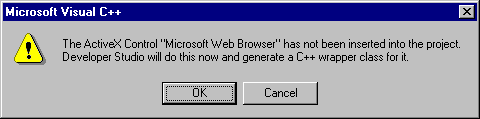
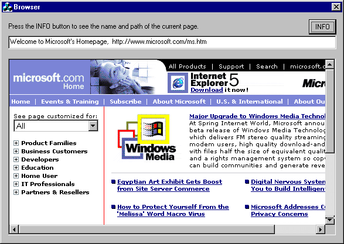

| ||||
This tutorial explains how use the Microsoft Foundation Classes (MFC) to add a WebBrowser control to your C++ application. The article is divided into the following sections:
To develop this application, you must have Microsoft® Visual C++® 6.0 and Microsoft® Internet Explorer 4.0 or later installed. This tutorial assumes that you are familiar with the Microsoft® Visual Studio® integrated development environment (IDE) and that you have an understanding of C/C++ programming, MFC, ActiveX® controls, and the Component Object Model (COM).
It's easy to create a WebBrowser control with Visual C++ because the IDE produces most of the code. The following steps guide you through the process.
Open Visual C++ and follow these steps:
The dialog box for Step 2 asks you to select any features and support your application will need—an About box or automation support, for example. The WebBrowser control is an ActiveX control, so select ActiveX Controls. Click Next to go to the next step.
The dialog box for Step 3 is used to define your project. You have only one project style option, Standard MFC. But you can indicate whether you want the IDE to generate comments in the source code, and you can specify how you want to use the MFC library. The default selections are appropriate for most applications. Click Next to go to the next step.
The dialog box for Step 4 displays the names of all the files and classes that Visual C++ created. You can change these to more descriptive names or to names required by your specification. Click Finish.
You now have a skeleton application. Because this example uses a dialog-based application, a dialog box with OK and CANCEL buttons appears in the Dialog Editor. Follow these steps to add an ActiveX control to the dialog box.
When you insert a WebBrowser control, an identifier for the control is automatically assigned, but you must provide a member variable to access the control. To add a variable:

You now have an application containing a Web browser. However, if you compile the code generated by Visual C++ and run the executable file, a browser does not appear.
To display the WebBrowser control, your application must navigate to a URL. The following example uses the Navigate method to open the Microsoft home page in a WebBrowser control.
//CWebBrowser2 m_browser - member variable
m_browser.Navigate("www.microsoft.com", NULL, NULL, NULL, NULL);
This section provides code for additional features you can add to your WebBrowser control.
Most Web applications enable the user to browse to any location by typing a URL in a text box. After the user enters the URL, the data is retrieved and passed to the Navigate method. Invoking Navigate causes the browser to navigate to the location.
To add browsing capability to your application you must provide a text box for entering and retrieving data, such as an edit control. To add an edit control, open your application in the Dialog Editor and choose Edit Control from the Controls toolbar. This creates the control, but to access and use the control you must add a member variable. See Steps 5 and 6 in the previous list for information about how to do this.
The following example uses an edit control to retrieve a location and pass that location to the WebBrowser control.
//CWebBrowser2 m_browser - to access the WebBrowser control //CEdit m_edit - to access an edit control CString string; m_edit.GetWindowText(string); m_browser.Navigate(string, NULL, NULL, NULL, NULL);
It's not necessary to display the title and path of the current page, but this information can be helpful to users. Typically, location information is displayed near the top of a WebBrowser control in a text box.
The following browser window shows the title of the page and the URL displayed in an edit box.

If the current location is an HTML page on the World Wide Web, you can use the get_LocationName and get_LocationURL methods to retrieve the title of the current page and full path of the folder or file. If you want this information displayed continuously, add the following code to the initialization process. If you want it displayed only when an event occurs, add the code to an event handler. The following example uses get_LocationName and get_LocationURL to retrieve location information and display it in an edit box.
//CWebBrowser2 m_browser - to access the WebBrowser control
//CEdit m_edit - to access the edit control
CString string1, string2;
string1 = m_browser.GetLocationName();
string2 = m_browser.GetLocationURL();
string1 = string1 +", " + string2;
m_edit.SetWindowText(string1);
The WebBrowser control does not support a print or zoom method, but you can add these features to your application with the ExecWB method. The following example shows how to do this.
//CWebBrowser2 m_browser - to access the WebBrowser control
//This code snippet prints the contents of the WebBrowser control
//after displaying a print dialog box.
m_browser.ExecWB(OLECMDID_PRINT, 0, NULL, NULL);
//This snippet changes the font size of the contents of the
//WebBrowser control. You can pass in a size between 0 and 5.
//Zero is the smallest.
VARIANT vFontSize;
m_browser.ExecWB(OLECMDID_ZOOM, 0, &vFontSize, NULL);
The following articles provide more information about the WebBrowser control:
Did you find this topic useful? Suggestions for other topics? Write us!
© 1999 Microsoft Corporation. All rights reserved. Terms of use.